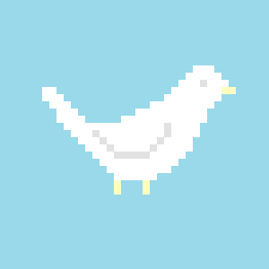

I'm from America. -> I'm American.
I'm from China. -> I'm Chinese.
I'm from Canada. -> I'm Canadian.
I'm from Korea. -> I'm Korean.
I'm from India. -> I'm Indian.
I'm from Japan. -> I'm Japanese.
I'm from Mexico. -> I'm Mexican.
beautiful / big / city / day / elevator / exciting / flower
go / house / look / nice / sky / up / use
What a beautiful flower!
What a big city!
We can use the elevator.
What an exciting day!
It's a beautiful flower.
Let's go up there.
The house is very big.
Look up there.
What a nice day!
What a beautiful sky!
rope / take a rest / tall / tower / ugly / worm
The bottle is very long.
The building is very tall.
The baby is very cute.
It's a very tall giraffe.
Let's take a rest.
The snake is very long.
Let's take a rest over there.
The rope is very short.
It's a tall tree.
It's a very tall tower.
The dog is very ugly.
The worm is very small.
basket / behind / by / guitar / in / in front of / key / mouse
on / pocket / rug / table / under / where / yarn
The ball is in the basket.
The dog is behind the basket.
The mouse is by the basket.
The guitar is by the table.
The book is in the bag.
The doll is in front of the door.
The ball is on the chair.
Jane's key is in her pocket.
The mouse is on the rug.
The bag is on the table.
It's under the bed.
Where is my key?
The yarn is in front of the basket.
art / class / Friday / have / Monday / Saturday
science / social studies / Sunday / Thursday / Tuesday / Wednesday
I like art class.
We don't have P.E. class today.
It's Friday
I have math class today.
Today is Monday.
Do we have math class on Saturday?
We don't have science today.
Do we have social studies today?
We don't have class on Sunday.
Today is Thursday.
We have English class on Tuesday.
I don't have English class on Wednesday.
animal / baseball / carrot / favorite / food / football / math
music / noodle / P.E. (physical education) / sport / strawberry / subject
My favorite animal is dogs.
I like baseball.
She doesn't like carrots.
What is your favorite fruit?
My favorite food is pizza.
We don't like football.
I don't like math.
My favorite subject is music.
I don't like noodles.
The like P.E.
What's your favorite sport?
She likes strawberries.
What is your favorite subject?
bad / cold / feel / fine / good / great
her / his / my / so / wrong / your
I'm not bad. / I have a cold. / I feel bad today.
A: How are you? / B: I'm fine.
I'm great. / Not so good. / How is her sister? / How is his uncle?
What's wrong? / How is your mother?